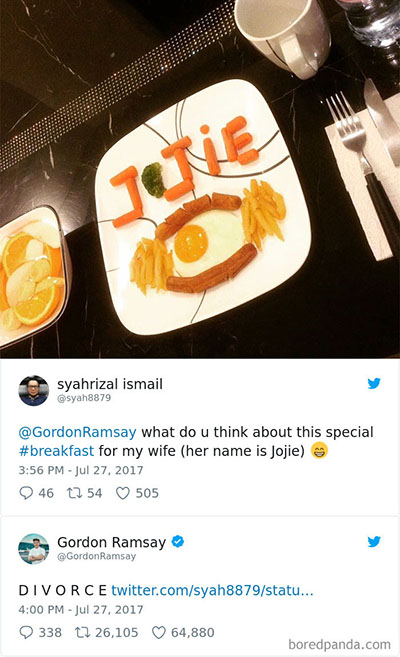
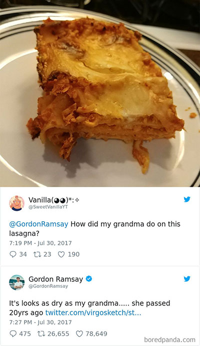
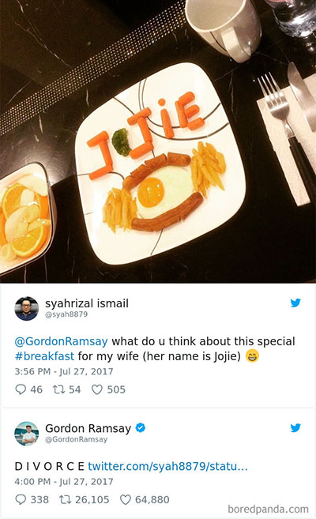
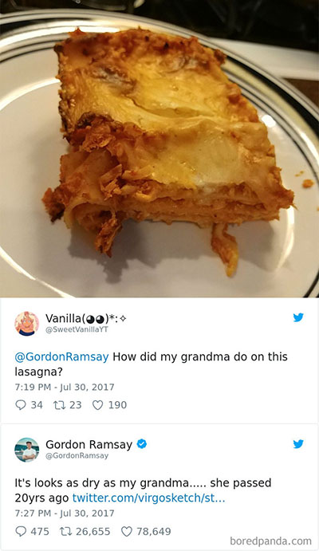

GORDON
RAMSAY
MEDIA
Prosperous restaurant businesses and excellent cuisine were not the only factors that launched Ramsay into stardom. The other half that solidified his notoreity is his television personality.
Gordon Ramsay launched his first show called Ramsay’s Kitchen Nightmares in 2004. The format is similar to other shows Ramsay currently runs that you may be familiar with: he works to transform failing restaurants into profitable enterprises, whether that be through the cooking, menu, preparation, or so forth. Since then, he has added on numerous television programs that soon became popular in the US, which took on versions of their British counterparts. His inflamed temper and often crude remarks made him a chef to be reckoned with; one that was both revered and terrifying.
His harsh criticisms have become an iconic staple and launched him into other media platforms, such as people tweeting their “culinary masterpieces” for his judgement and show hosts featuring him as a guest appearance. If you have a favorite media outlet, chances are we have it here for you.
If you feel brave enough like these fellows, you can tweet at Ramsay to have him rate your food. Be preapred though, the comments are not usually encouraging! But if you truly can earn a good comment from the man, well, then maybe things life are going to be okay...


 


